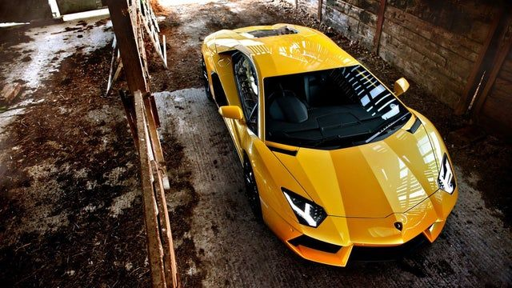

람보르기니의 플래그십 슈퍼카. 대한민국에 가장 많이 있는 람보르기니 차종이다. 무르시엘라고의 후속 모델로 2011년 3월에 제네바 모터쇼에서 처음 공개되었다.
참고로 아벤타도르(Aventador)는 스페인어로 풍구라는 뜻이다. 그간 '폭발적이다', '이기적이다', '독극물', '악마'와 같이 과격하고 남성미 넘치는 이름을 써오던 걸 생각하면 다소 의아하게 느껴질 수 있는데, 사실은 풍구를 떠올리고 붙인 이름이 아니라 '아벤타도르'라는 투우 소의 이름에서 따온 것이다.
아벤타도르는 스페인 투우사 돈 셀레스티노 콰드리 비데스(Don Celestino Cuadri Vides)의 아들이 키우던 소였는데, 1993년 스페인 사라고사에서 열린 투우 경기에 참여하여 투우사와 맹렬한 경기를 벌인 것으로 유명했다. 황소답게 거칠고 난폭하고 과격하며 공격적이였던, 맹활약을 선보였던 투우소다. 2020년 9월 18일 1만 번째 아벤타도르가 산타 아가타 볼로냐 공장에서 생산됐다. 이 아벤타도르는 SVJ 로드스터 모델이며, 아체소 매트 그레이 외관 컬러에 로쏘 미미르 레드 컬러가 하이라이트 컬러이다. 2021년 7월 7일 아벤타도르의 마지막 모델 LP 780-4 얼티매가 공개되었다.